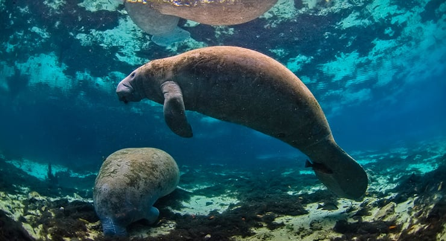

Many animals depend on coastal and underwater ecosystems to survive, including species such as manatees. Healthy habitats provide food, shelter, and safe areas for marine life.
Clean, clear water is essential for underwater plants and animals to thrive. Debre and contaminants in the water can damage habitats and threaten marine life.
Underwater plants support aquatic ecosystems by offering food and habitat for animals like fish and manatees. These plants also help keep water clean by stabilizing sediment and improving water quality.